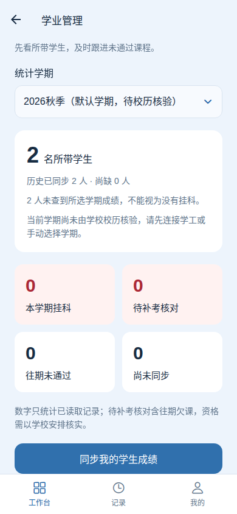
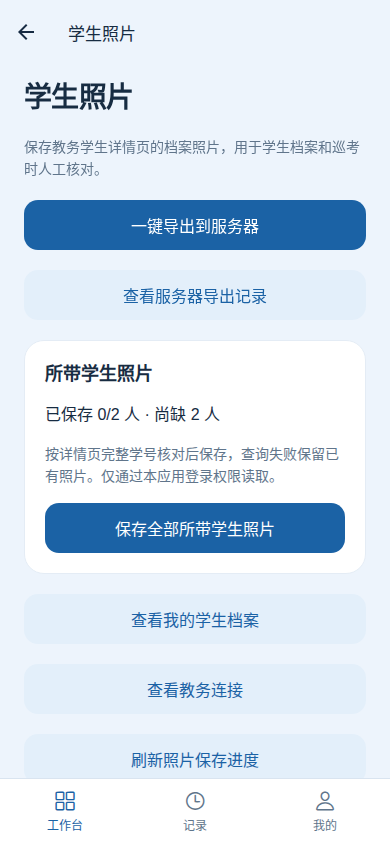
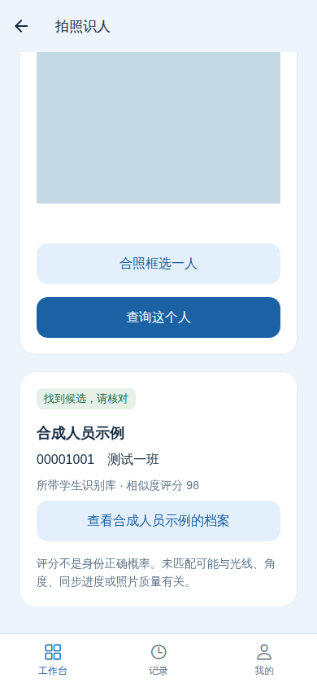
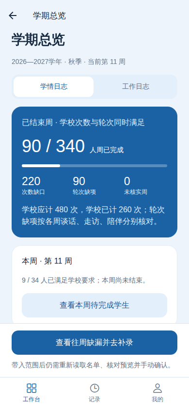
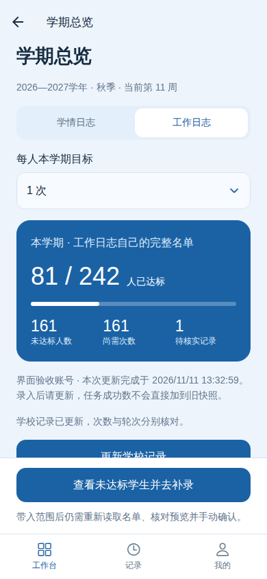
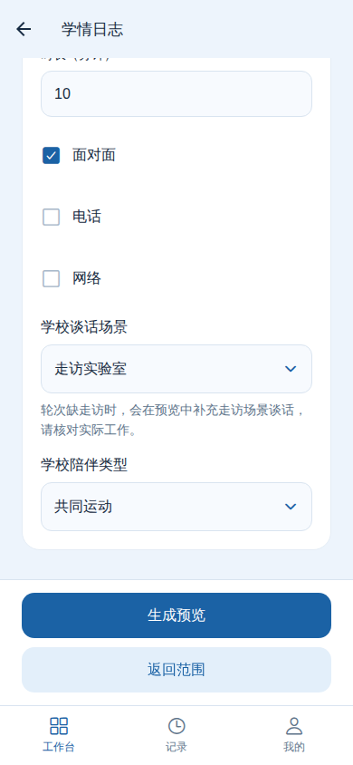

按周记录陪伴和谈话
一键录入：奇数周陪伴、偶数周谈话为优先安排，同时补足学校次数和未完成轮次；已达标项目跳过。
只录一种：从“陪伴录入”或“谈话录入”进入。类型由入口决定，里面不用再选。
Android 版
录日志、看学业，拍照核对所带学生。
学校账号登录，无需另注册识同事账号。
Android 7.0 及以上 · 64 位 ARM 手机
安装包信息加载中 · 可覆盖安装原版本
安装包信息暂时无法加载，请刷新页面重试。

学业管理
学业与录入功能在 Android 应用内使用，本网页提供下载与操作指南。以下界面均为隔离示例数据。

补考巡考按原考试学期和科目汇总所带学生，区分仍未通过、已有通过记录及待核实状态。核对名单不代表学校已确认补考资格，考试时间地点以学校通知为准。

照片按学号命名，专业和班号可选；当前教务来源每人一张。缺照片学生不列入主导入名册，部分完成会明确提示。原照片导出仍用于档案与巡考核对；新版另提供独立的授权照片同步和拍照识人入口。照片与名册不会出现在公开下载网页。

默认使用个人库，明确共享的库按权限可查。学校照片查看权限不代替人脸识别用途授权；相似度评分不是身份正确概率，结果必须人工核对。
第一次使用
配图使用示例账号和示例学生，实际名单以你的学校账号为准。

连接成功后，学情、工作日志和校历共用学校连接，最长保留 24 小时。学校提前要求认证时，会进入现有连接页；验证后返回原页面，填写内容会保留。提交记录仍需你点击确认。
直接安装新版覆盖更新，保留应用数据。通常无需卸载；任务历史仍保留在原账户中。
先分清入口
两类日志的学生名单不同。请从对应入口进入，不要用一边的学生名单代替另一边。
一键录入：奇数周陪伴、偶数周谈话为优先安排，同时补足学校次数和未完成轮次；已达标项目跳过。
只录一种：从“陪伴录入”或“谈话录入”进入。类型由入口决定，里面不用再选。
进入“学期谈话”，读取完整所带名单和本学期次数。
默认跳过已达到目标次数的学生，在已过去的可用工作日之间尽量均匀安排。

名单不会挤在表单里。选完返回后，可以直接填写后面的规则。

默认使用周一至周五 09:00–12:00、14:00–17:00，10 分钟内最多 2 人。只安排已经过去且已结束的时间，不会提前录入未来记录。

自动生成的是时间与谈话方式建议。已生成的具体方式在刷新和重试时保留；选择随机不保证三种方式数量相同。请以实际工作为准，核对后再提交。生成预览和重新读取名单都不会新增学校记录。

任务明细会显示每人的状态、原因及取得的学校回执。
学期总览
学校“应完成次数”和“应完成轮次”是独立要求，不能用“已有一条”代替全部完成。

总览只读，更新与筛选都不会提交记录。手动更新默认完整重读学校数据；任务后自动刷新可复用已核实往周，界面会提示复用范围。失败分片下次继续读取，不把失败当零次。学校达标按学校次数和轮次判定；未来时间或无效时长单独提示，不混同为学校未完成。

未来谈话、零时长及负时长异常记录不计入已完成；待核实项不会直接自动补写。其他学生多谈几次，不能抵扣某个学生的缺少次数。

学校计次数不一定等于记录条数：走访场景谈话可同时计入谈话与走访。应用按学校实际返回值复核，不用本地条数推测已经达标。请以真实完成的工作核对后提交。
遇到问题
新版优先复用有效连接，并在学校提供时选择信任此设备；登录快照加密保留，成功使用后更新。学校使会话失效或强制二次认证时，仍须完成当次验证码。24小时快照保留期不是学校保证的免验证期限。
可以。学校身份验证成功后自动关联个人学生库，无需另外注册或设置密码。首次同步前请逐人核对人脸识别用途授权。
新版会自动返回范围页，重新读取名单和次数。仍在册的已选学生与填写的规则会保留，读取完成后，核对人员再继续生成新预览。它不会自动替你提交记录。
若网络或学校暂时不可用，页面会显示具体原因；恢复后重新读取即可。
学校的两套业务使用不同名册，学情名单还可能随周次变化。应用会分别读取，不把两边的学生混在一起。
不需要。进入统一的学校连接页面，连接成功后各业务共用。你也可以在“我的”中连接或切换学校账号。
可能没有足够的已过去工作时段、对应学校日志不可编辑，或学校要求的信息尚未补全。请查看预览或任务明细的具体原因；应用不会用未来时间补足数量。
规则和人员选择会保存为本机草稿，再次进入同一录入入口可恢复。名单过期会重新读取；仍在册的选择会保留。已经提交的任务请从工作台或“记录”查看，不要重新创建。
不会，它只筛选列表。学情按所选周及入口类型判断缺少记录的人员；工作日志按当前目标次数判断。默认全选和原来的确认选择按钮保留。
可以通过学校账号验证找回已绑定的原账户，恢复码只作可选备用。没有已验证历史绑定时，应用会提示明确选择新建账户，不会自动关联他人记录。
需要 Android 7.0 及以上、64 位 ARM 手机。iPhone 无法安装 APK。
2026 年 11 月 13 日发布 · Android 正式版 · 可覆盖安装原版本
加载中
已完成264项自动化检查和11项界面交互检查，安装包签名与原版一致。已验证真实学校登录、服务重启后的教务连接恢复及已授权学校照片同步；抽查3人原图回查均返回对应本人。原图回查不代表现场新照片准确率，手机安装与实际拍摄仍需实机核对。配图均为示例数据。